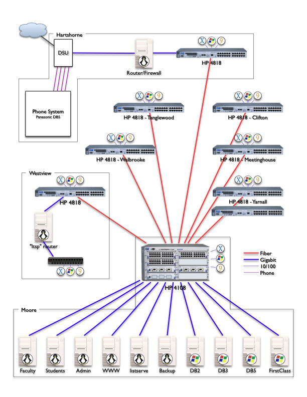
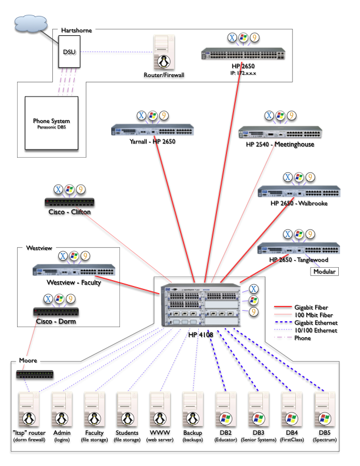
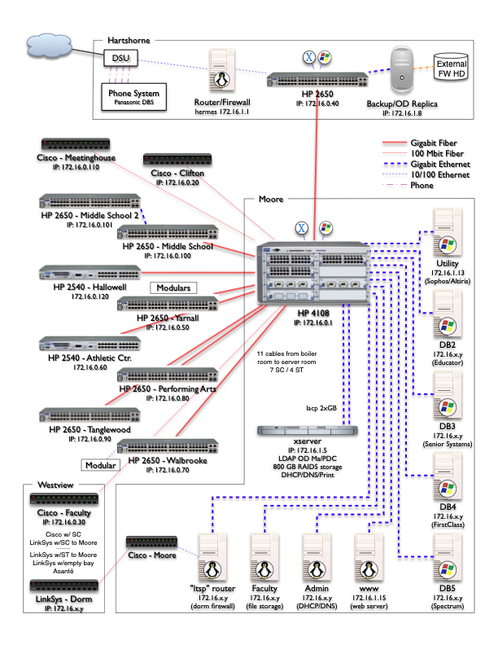
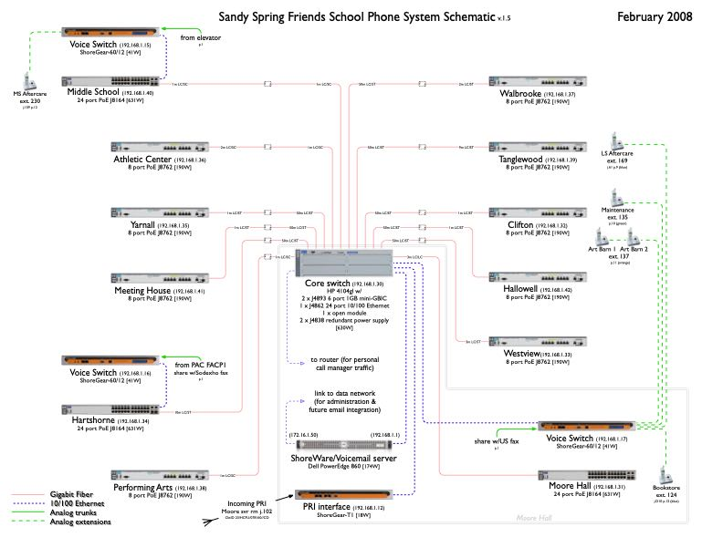
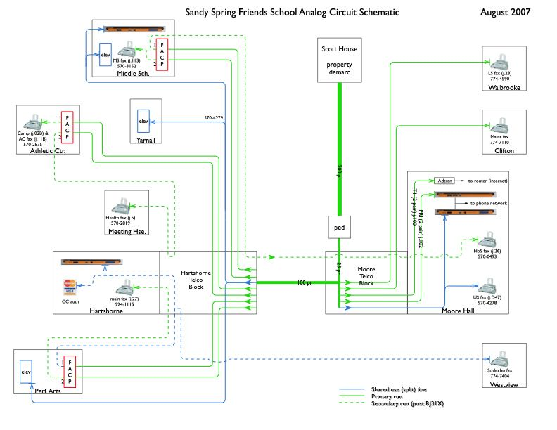

A gallery of some of my favorite diagrams, created with software ranging from Aldus FreeHand to today’s Omnigraffle.
A gallery of some of my favorite diagrams, created with software ranging from Aldus FreeHand to today’s Omnigraffle.
In 1989 I was a mobile electronics saleperson and wanted to do more, so I would create schematics of the high-end installations done by the shop. The challenge was to retain an uncluttered look while including all the components and interconnections, and do so in a balanced, psuedo-symmetric layout.
Back then rounded rectangles were all the rage and I complemented them with curves instead of angles for the wiring. The circles used to represent speakers are perhaps not to scale, but are proportionally sized relative to one another.
Customers loved these diagrams since no one was doing visual representations of a car audio systems. Plus they were printed on a cutting-edge 300dpi laserprinter. This was done on a Macintosh SE using Aldus FreeHand which was one of my favorite applications.
I was a desktop publisher at Kinko’s in the early 90s, and while we did our share of resumes, business cards, and letterheads, my specialty was the more complex jobs. Here is an order form that incorporates a logo I produced from the customer’s sketch, and supporting illustrations, all of which I created in either FreeHand or perhaps Illustrator. The form itself was probably done in an early version of PageMaker.
The dimension lines and wave to show truncation of the torso in figure 4 show my familiarity with some of the conventions of architectural and engineering plans (from my previous summer jobs). Small details like the dimension lines knocking out the body parts and different line weights to divide sections of the form help with clarity. And the drop shadow checkboxes come right from the Macintosh UI of that era.
This is a change request document for the Ethernet network design of a new middle school. The bulk of this document is excerpted from building plans, and it is the red text and captions at the bottom that I added. Not at all difficult, but the point is to convey with absolute certainty the changes being requested. This is an exercise in failsafe documentation and accountability. Its purpose is to eliminate any chance of the changes being misinterpreted or overlooked by any of the various parties responsible for construction of the building and installation of the cabling and jacks.
The red text is impossible to lose even amongst all the other elements within the drawing. Lower case text was used intentionally to further differentiate the changes from the other text in the drawing (in case the document was conveyed in black and white).
This series of diagrams shows the evolution of the campus-wide fiber optic / Ethernet network and server roster I planned and executed as Director of Technology. Documenting the current state helped in planning and prioritizing upgrades on the path to the ultimate desired state. Being a multi-year process, I updated the diagrams as changes were made. Five of them are below, showing the growth of the network but also continued refinement of the schematic itself.
V1 was the first mapping of the network equipment, connections, & locations. Server OS icons are useful, but on switches?
V3 adds true equipment models and connection speeds to help track planned upgrades.
V4 adds new building switches, IP addresses and better organization but is getting crowded.
V6 incorporates updates to the infrastructure but is unfinished as it became apparent a reorganization of the diagram was needed in order to fit all of the components of the expanded network and retain clarity.
The final version is very information dense while remaining clear and uncluttered. To reduce distractions, connections are all orthogonal and building demarcations are more subtle, and no more client OS icons.
Companions to the network/server schematic, these two diagrams show the VoIP phone system and the plain old telephone system lines and equipment spread over the 11-acre campus. As with the above, I think it is valuable to be able to see the entire system with useful details included and while still fitting on a single, legible page.
Incorporating the lessons learned in diagramming the computer network, it only took a few revisions to reach the final version. Unobtrusive details include the power draw for each device and the various types of connectors used between the fiber optic cables and each switch.
After much assessment, triage, planning and migration, this diagram shows the size and endpoints of the usable copper cabling buried underground, and how the analog telephone lines are allocated and routed.
This is a simple job meant to show the parking options available near an event venue. The primary goal is that the map is completely self-explanatory. Other features of note are that the four areas of interest are all accented in yellow as if done by a highlighter, and that the labels for the four highlighted areas do not obscure the map detail beneath them. However, the main venue is a slightly different yellow to set it apart from the three (interchangeable) parking lots.
Map data ©2015 Google
From my days at Apple, this job aid was meant to help support agents quickly classify the specific issue they’d faced during a call. Remembering where a particular endpoint was from among the sixteen root level choices could be difficult. This chart makes every possible choice visible at once, so an agent can quickly scan to find what they are dealing with and then use the colored lines to trace back to the correct initial menu option. Due to the number of choices this chart is very crowded; however, the use of color means the eye does not need to actually follow the tighly spaced lines from box to box.
If the issue was within the upper right orange box, for example, the line connecting back to “Apps” can be traversed with reckless speed because the box, line, and destination are all orange. And although colors repeat they are far enough apart that there is no danger of jumping onto the wrong track.
Apple may feel that the sixteen root categories are distinct and chosen well enough that it is obvious which to choose to find the leaf one is looking for, but agents who struggled found this diagram very helpful.
This diagram was for a course in my Information Sysytems Management degree to illustrate a proposed solution to the merger of two carpet businesses.
My goal when creating a diagram is that it be almost like a fractal: one can view it at a high level to get an overview, but there is also a wealth of detailed information that is present but does not clutter or crowd the document. I strive for a subtle elegance where one can take in the information and just as a question may enter the viewer’s mind, the answer is found to be already present on the page.
This approach works when the audience has varying degrees of technical or subject knowledge. For example, some may be content to know that the mobile device in the upper left corner has a cellular connection to the internet. Others may want to know how it is possible for that data to be accessible to the warehouse employees, so the various segments of that path are shown (in a simplified manner).
Finally, here’s one from the arcade collecting and repair hobby I was involved in. A sub-genre of games from the heyday of coin-operated games used vector displays. They draw objects geometrically which produce a much higher resolution than the RAM-limited raster games of the time. Games like Asteroids, Battlezone, and Omega Race used black and white vector displays and games like Tempest, Space Duel, and Star Wars used color vector displays.
There were two models of color vector displays used by Atari, and this diagram shows the internal connections for both. It also identifies the location of the big transistors used within the monitor board, and which quadrants of the image each transistor is responsible for.
As a bonus, all of the various harness conductor counts are enumerated and the endpoints are specified as soldered or connectorized. This is a reference for people who know what they are working with, but want to be sure.